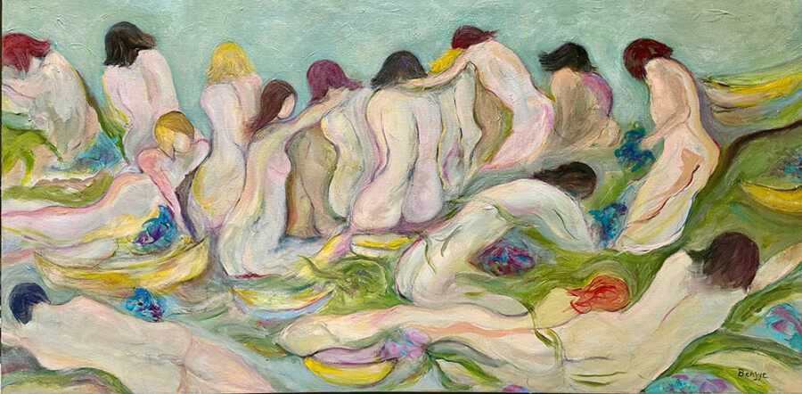

Benjye Troob: Forms & Horizons
Join Jackson Junge Gallery in celebrating the past, present, and future of Benjye Troob’s remarkable career in FORMS & HORIZONS: A Retrospective. Spanning more than four decades of drawing and painting, this retrospective highlights Benjye Troob’s lifelong dedication to art. The exhibition brings together her select works from the late 1990s to today, offering visitors an intimate look at Benjye’s artistic evolution and her ever-shifting yet unmistakable vision. While her style continues to evolve, her art consistently captures both the vitality of the human form and the beauty of the natural world.
Free and open to the public.